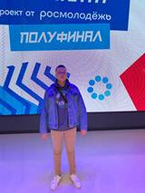
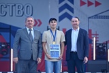

В рамках Международного конгресса «Транспорт и строительство» с 19.09 по 21.09.22 г. прошел
молодежный
конкурс профессионального мастерства «СтройЮность» по 11 компетенциям строительной отрасли. Более
сотни
ребят соревновались на площадках в течение трех дней. Ишимбайский нефтяной колледж по компетенции
«Электромонтаж» представляли Хисаметдинов Айбулат, гр.ЭП1-19 и Каримов Реналь, гр.ЭП3-19,
руководитель
Ментененко А.Е., по компетенции «Охрана труда» Новиков Данил гр.БС3-19, руководитель Гумеров А.Р.
Большая перемена

С 9 по 13 сентября в наш студент Бардуков Дмитрий гр.ЭС3-19 в составе сборной Республики
Башкортостан
принял участие в полуфинале Всероссийского конкурса «Большая перемена» г.Москва среди обучающихся
профессиональных образовательных организаций. «Большая перемена» - это место, где ты можешь
реализовать
свои таланты, бросить вызов самому себе, стать победителем, выиграть бомбические призы и получить
яркие
впечатления на всю жизнь! Результаты полуфинала будут известны только в ноябре, а мы держим за ребят
кулачки и желаем победы и дальнейших творческих успехов!